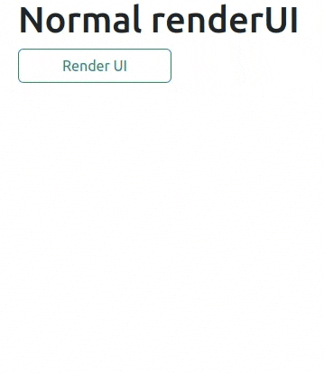
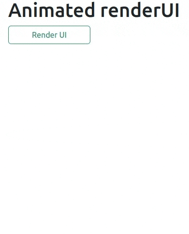

Demo
Here is how renderUI() normally functions:

There’s nothing wrong with it. It works well.
But notice how on the initial render, the user is just slapped with the content. It gets worse if you’re rendering a huge portion.
I’m not here to offer you another version of renderUI. What I can do, however, is show you how you can improvise and make the rendering feel magical to the user.
Let’s take a look at a sample:

The rendered UI now smoothly slides down and up depending on user action. How cool is that?
Introduction
I’ve been playing around with JQuery and I must admit, it’s very fascinating. It has allowed me to do some exciting things.
Today we’ll focus on one specific task:
- Adding a sliding animation (like the one in the demo) to a
div
Module
One thing is for sure: I am going to use modules.
The module’s UI is pretty straightforward:
R/mod_animated_ui.R
For the server part, let’s build it up step by step. Starting with what we’re all used to, then levelling up to new heights.
R/mod_animated_server.R
mod_animated_server <- \(id) {
moduleServer(
id = id,
module = \(input, output, session) {
ns <- session$ns
# values to use for the textInput:
aliases <- c(
"Gandalf the grey", "Strider", "Saruman",
"Sauron", "Frodo", "Samwise Gamgee"
)
output$theui <- renderUI({
tagList(
tags$div(
id = ns("to_animate"),
style = "display: none;",
selectInput(
inputId = ns("selector"),
label = "What's your fav letter?",
choices = LETTERS,
selected = sample(x = LETTERS, size = 1)
),
textInput(
inputId = ns("name"),
label = "Enter your pseudo name",
value = sample(x = aliases, size = 1)
),
checkboxInput(
inputId = ns("lotr_fan"),
label = "Are you a LOTR fan?",
value = sample(x = c(FALSE, TRUE), size = 1)
),
tags$p(
tags$em("PS: Don't overdo the animations! Thanks.")
)
),
tags$div(
class = "d-flex",
actionButton(
inputId = ns("toggle_div"),
label = "Hide the rendered UI",
class = "btn-outline-primary px-5 mr-1 mt-3"
)
)
)
}) |> bindEvent(input$render_div)
observeEvent(input$render_div, {
updateActionButton(
session = session,
inputId = "render_div",
label = "Re-render UI"
)
}, once = TRUE)
}
)
}A few things to note here:
- To get this module’s namespace we use
ns <- session$ns. This is the equivalent ofns <- NS(id)in the module’s UI. - The
divwe’re returning inside of thetagListhas:- An id which we will use later in JQuery to select the
div. - A display of none. This means that even after it is rendered, it will take no space and hence won’t be visible. This is similar to what
shinyjs::hide()does.
- An id which we will use later in JQuery to select the
- We only need to render the UI when the user clicks on the button, hence
bindEvent(input$render_div). - Once the button
render_divis clicked, we change it’s label to “Re-render UI”, and we only do this once since any further clicks will just be “Re-rendering the UI”. That’s why we haveonce = TRUEon theobserveEvent. The observer is destroyed after the first time the handler expression is ran.
Now, are you ready for the juicy (and probably messy) part?
I’m not a fan of inline JS in a shiny app, unless it’s just a short one-liner.
What I’m trying to tell you is that we’re going to use a script. Let’s add it just before closing the tagList:
We want the script to target elements in this module alone, not any other part of ui.R. This presents us with a huge problem:
- How do we pass our module’s namespace to the script?
This is the point where I almost gave up on using modules. I tried numerous tricks, I googled, I even asked my grandma :)
None of those worked, least of all the last option. So I decided to take a walk.
I was in the middle of nowhere when a thought crept into my mind:
Can R read an arbitrary file? If so, I can read the JS file and modify it so that the selectors incorporate the namespace id.
Let me explain.
script.js
www/animate.js
$(document).ready(function () {
const ns = undefined;
const div = $("#" + ns + "to_animate");
const toggle_div = $("#" + ns + "toggle_div");
const hide_text = "Hide the rendered UI";
const show_text = "Show the rendered UI";
div.slideToggle(600);
toggle_div.on("click", () => {
div.slideToggle("slow");
// toggle button text:
toggle_div.text(toggle_div.text() === hide_text ? show_text : hide_text);
});
});Here’s what the script does, line by line:
- Line \(1\) says: Wait till this document is ready for manipulation and then call this anonymous function.
- Line \(2\) is the key to solving our problem. We assign
undefinedto a variablens. We will replace theundefinedwith our module’s namespace. - Line \(3\) selects the
divto animate. - Line \(4\) selects the button which hides and shows the rendered
div. - Line \(5\) & \(6\) are the button labels when the
divis hidden or shown. - Recall that by default the rendered
divis hidden. Line \(8\) makes it visible and slides it down in a span of 600 ms. - On line \(10\), we are adding an observer to the button. We’re basically saying whenever the button is clicked:
- If the
divis hidden, show it [slowly]. If it’s shown, hide it [slowly] (Line \(11\)). - Relabel the button. If its current label is
hide_text, change it toshow_text. Otherwise change it tohide_text(Line \(13\)).
- If the
Now let’s circle back and add this script to our module’s server:
R/mod_animated_server.R
mod_animated_server <- \(id) {
moduleServer(
id = id,
module = \(input, output, session) {
ns <- session$ns
# read animate.js and add namespace to the line "const ns = undefined":
anim_js <- readLines(con = file.path("www", "animate.js")) |>
gsub(
pattern = "const ns = undefined",
replacement = sprintf('const ns = "%s"', ns(""))
) |>
paste0(collapse = "\n") |>
HTML()
# ...
output$theui <- renderUI({
tagList(
# ...,
tags$script(anim_js)
)
}) |> bindEvent(input$render_div)
}
)
}The most important thing to note here is that passing an empty string to ns returns the namespace of the module.
That’s it! Here’s how the final module server looks like:
Show code
R/mod_animated_server.R
mod_animated_server <- \(id) {
moduleServer(
id = id,
module = \(input, output, session) {
ns <- session$ns
# read animate.js and add namespace to the line "const ns = undefined":
anim_js <- readLines(con = file.path("www", "animate.js")) |>
gsub(
pattern = "const ns = undefined",
replacement = sprintf('const ns = "%s"', ns(""))
) |>
paste0(collapse = "\n") |>
HTML()
# values to use for the textInput:
aliases <- c(
"Gandalf the grey", "Strider", "Saruman",
"Sauron", "Frodo", "Samwise Gamgee"
)
output$theui <- renderUI({
tagList(
tags$div(
id = ns("to_animate"),
style = "display: none;",
selectInput(
inputId = ns("selector"),
label = "What's your fav letter?",
choices = LETTERS,
selected = sample(x = LETTERS, size = 1)
),
textInput(
inputId = ns("name"),
label = "Enter your pseudo name",
value = sample(x = aliases, size = 1)
),
checkboxInput(
inputId = ns("lotr_fan"),
label = "Are you a LOTR fan?",
value = sample(x = c(FALSE, TRUE), size = 1)
),
tags$p(
tags$em("PS: Don't overdo the animations! Thanks.")
)
),
tags$div(
class = "d-flex",
actionButton(
inputId = ns("toggle_div"),
label = "Hide the rendered UI",
class = "btn-outline-primary px-5 mr-1 mt-3"
)
),
tags$script(anim_js)
)
}) |> bindEvent(input$render_div)
observeEvent(input$render_div, {
updateActionButton(
session = session,
inputId = "render_div",
label = "Re-render UI"
)
}, once = TRUE)
}
)
}The app
ui.R
Conclusion
I don’t know about you, but I’m kinda liking JavaScript.
JQuery has many such effects which you can use in your apps for better UI/UX.
$(this) has been JQuery + Shiny in a nutshell.